°Aves de rapina ou rapinantes é um nome dado a todas as aves carnívoras que compartilham determinadas adaptações para a caça ativa, como o bico curvo e afiado, garras fortes, voo poderoso, além de uma excelente visão e audição. Para a maioria dos especialistas, somente as espécies das ordens Accipitriformes (águias e gaviões), Falconiformes (falcões), Cathartiformes (urubus) e Strigiformes (corujas), são aves de rapina.
°De maneira geral, aves de rapina são ágeis e eficientes na captura de suas presas, caçam desde grandes artrópodes, peixes, anfíbios, pequenos mamíferos até outras aves. Mas cada rapinante está adaptado para caçar um tipo de animal, ou um certo grupo deles. Dentre as características, destaca-se a visão aguçadíssima: essas aves enxergam de 2 a 8 vezes mais que o homem. Assim, são capazes de avistar sua presa a dezenas de metros de altura e mergulhar diretamente sobre ela. A águia-real (Aquila chrysaetos), por exemplo, consegue ver uma lebre a mais de 3 km de distância.
°Outra característica interessante dos rapinantes é os olhos voltados para frente, resultando em uma visão binocular, o que dá uma noção de distância e profundidade, ideal para calcular manobras aéreas e ataques contra suas presas. A audição também é boa, essas aves escutam e distinguem muito bem o som de outro rapinante ou de uma presa agonizando. O bico é uma das características mais notáveis para distinguir as aves de rapina de outros grupos de aves. Os bicos são fortes, curvos e afiados, usados para rasgar a pele/carne durante a alimentação ou até para matar suas presas (no caso dos falcões). O formato do bico e tamanho varia de acordo do tipo de presa consumida. As garras também são fortes e afiadas, sendo a principal arma usada pelas aves de rapina predadoras para capturar a matar suas presas.
° Ave de rapina é o nome que se dá a centenas de espécies de aves carnívoras, como os gaviões, as águias e os falcões. Essas aves são conhecidas por raptar suas presas, o que explica o seu nome (“rapina” significa roubo, saque). Ou seja: as aves de rapina se valem de suas enormes garras para pegar e levar embora suas presas.
Aves de rapina têm algumas características físicas bastante específicas: bicos afiados em forma de gancho, garras fortes e visão e audição bastante aguçadas. Algumas espécies são diurnas (caçam durante o dia), como as águias. Outras são noturnas, como as corujas.
ÁGUIAS
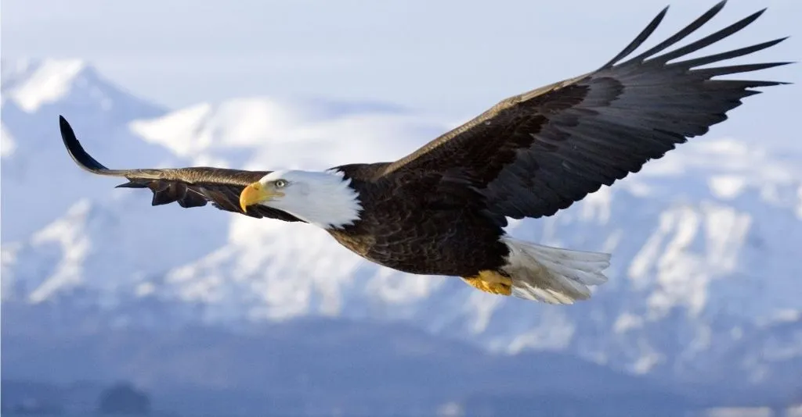
1°= Águias: As águias são aves de rapina de grande porte e estão entre as maiores aves do planeta. São famosas por sua excelente visão, capaz de detectar uma presa a 3 km de distância! Elas pertencem à família Accipitridae, da qual também fazem parte outras aves, como gaviões e abutres.
GAVIÕES
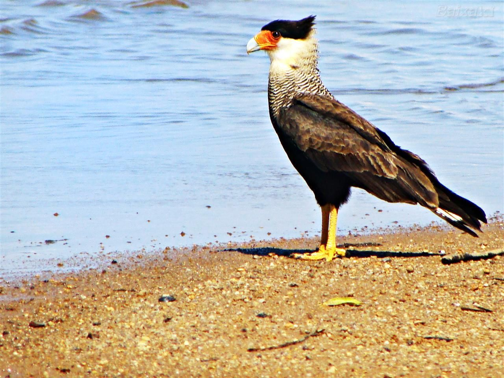
2°= Gaviões: Os gaviões pertencem à mesma família das águias (Accipitridae) e são bem parecidos com elas fisicamente. Uma diferença importante entre as águias e os gaviões é que estes são menores (boa parte das espécies pesa menos de 1 kg). Além disso, os gaviões são menos poderosos e imponentes do que a águia.
CORUJA
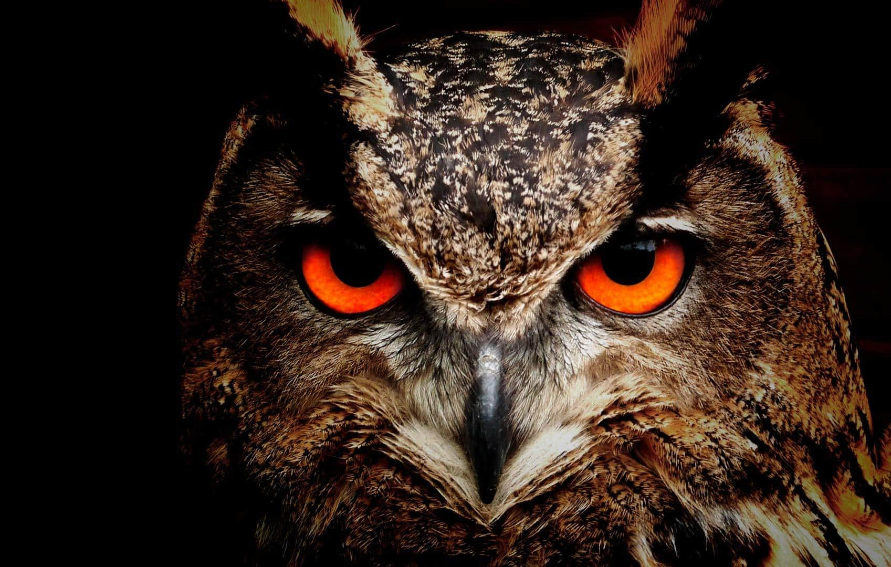
3°= Corujas: As corujas são aves de rapina predominantemente noturnas. Há mais de 220 espécies de corujas (ordem Strigiformes), distribuídas em quase todas as regiões do mundo, dos trópicos ao Ártico.
As corujas têm características físicas inconfundíveis: suas cabeças são grandes em relação ao corpo e redondas, seu rosto é achatado, seus olhos são grandes e voltados para a frente. Seu bico é pequeno, porém bastante afiado, e o mesmo se pode dizer em relação a suas garras, com as quais capturam cobras, lagartos, peixes, roedores e insetos.
FALCÃO
4°= Falcões:Comparados às águias, os falcões são aves pequenas. Eles tâm bico curto e asas longas e pontiagudas. São as menores aves de rapina do mundo. Os maiores indivíduos chegam a medir 60 cm. A maior parte das espécies não ultrapassa meio quilo.
URUBU
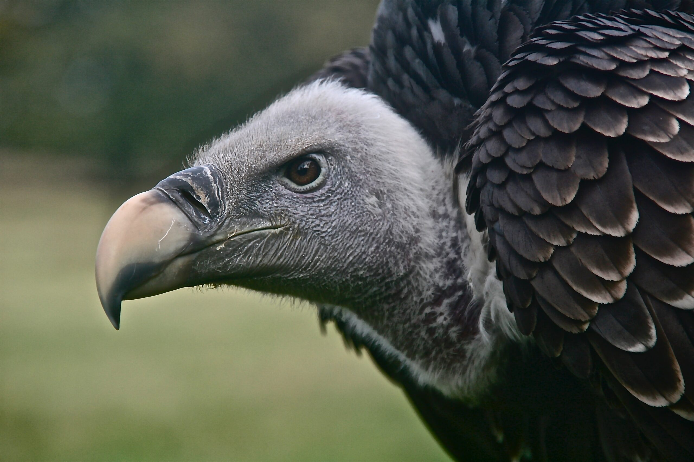
3°= Urubus: Os urubus são aves necrófagas - isto é, alimentam-se predominantemente de animais mortos. Por isso, são conhecidos como “faxineiros da natureza". Algumas espécies de urubus podem caçar pequenos animais, como cobras e aves, além de se aproveitarem de animais feridos e doentes.
Para localizar seus alimentos na natureza, os urubus se utilizam principalmente de sua visão super aguçada, capaz de detectar animais mortos a quilômetros de distância. Algumas espécies, como o urubu-de-cabeça-vermelha, conseguem localizar carcaças através do olfato.
Urubus são aves de médio e grande porte: pesam entre 1 e 2 kg e possuem uma envergadura de asas de mais ou menos 1,80 m. Pertencem à família Cathartidae, da qual fazem parte os condores. As cinco espécies de urubus podem ser encontradas no Brasil.
CONDORES
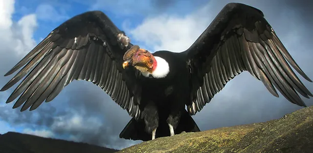
3°= Condores: Existem apenas duas espécies de condor: o condor-dos-andes (Vultur gryphus) e o condor-californiano (Gymnogyps californianus). Como os próprios nomes já sugerem, ambas as espécies só podem ser encontradas nas Américas.
São da mesma família dos urubus (Cathartidae) e, tal como eles, são animais carniceiros. Dotados de uma grande capacidade de planar, são capazes de sobrevoar centenas de quilômetros num só dia a fim de localizar seu alimento (animais mortos).
Os condores-dos-andes estão entre as maiores aves voadoras do mundo, podendo chegar a três metros de envergadura de asas e pesar até 15 kg! Essa espécie gigantesca ocorre na Cordilheira dos Andes e pode ser encontrada na costa marítima chilena, onde se alimenta de animais marinhos mortos. Em relação à alimentação, o condor-dos-andes prefere carcaças de animais grandes, como lhamas, alpacas e outros mamíferos. Na costa, alimentam-se de carcaças de peixes, focas, leões-marinhos e golfinhos.
ABUTRE
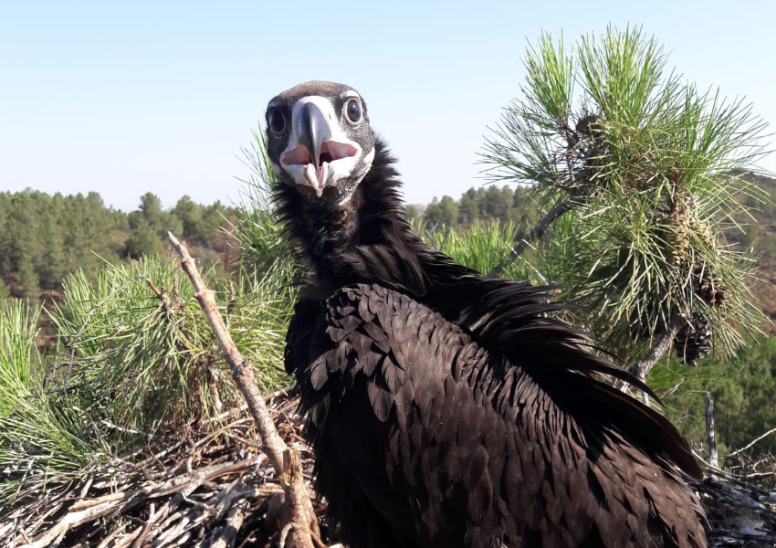
3°= Abutres: Tal como os urubus e os condores, os abutres são aves de rapina necrófagas - ou seja, se alimentam de carcaças de animais mortos. Mas só existem na Europa, na Ásia e na África, ao passo que os urubus e os condores são restritos às Américas, o que lhes valeu o apelido de abutres do Novo Mundo.
Apesar das enormes semelhanças, inclusive físicas, os abutres não pertencem à mesma família dos urubus e dos condores. Eles são da família Accipitridae, da qual fazem parte aves de rapina diurnas como as águias e os gaviões.
As semelhanças com os abutres do Novo Mundo, embora não sejam genéticas, se explicam pelo fato dessas aves terem evoluído de forma bastante parecida. Apesar de habitarem continentes distintos, os abutres do Novo e do Velho Mundo desempenham papéis parecidos na natureza.
Aves de rapina: diferenças entre diurnas e noturnas
Tanto as aves de rapina diurnas quanto as aves de rapina noturnas são animais que apresentam características comuns, como a garra e o bico. No entanto, possuem também personalidades distintas, capazes de diferenciá-las facilmente:
As aves de rapina noturnas têm a cabeça mais arredondada, o que lhes permite captar melhor os sons.
Outra característica que as distingue é que podem compartilhar espaço, mas não o tempo, ou seja, quando as aves diurnas vão para seu local de descanso, as aves de rapina noturnas começam sua rotina diária.
A visão das aves de rapina noturnas é adaptada à escuridão, podendo enxergar na escuridão total. As diurnas têm um excelente sentido de visão, mas precisam da luz para enxergar.
As aves de rapina noturnas são capazes de detectar o mínimo som devido à fisionomia de seus ouvidos, localizados em ambos os lados da cabeça, mas em alturas diferentes.
As plumas das aves noturnas são diferentes das diurnas porque têm uma aparência aveludada, que serve para diminuir o som que elas emitem durante o voo.
ALGUMAS ESPÉCIES DE AVES DE RAPINAS:
1
2
3
4
5
6
7
Águia
Falcão-peregrino
Peneireiro-vulgar/td>
Peneireiro-das-torres
Ógea (Falco subbuteo);
Esmerilhão
Falcão-gerifalte
Condor-dos-andes
Urubu-rei (Sarcoramphus papa);
Águia-imperial-ibérica
Águia-gritadeira
Águia-imperial-oriental
Águia-rapace
Águia-negra-africana
Águia-dominó
Abutre-preto
Abutre-fouveiro
Abutre-de-bico-longo
Abutre-barbudo
Abutre-de-rabadilha-branca
Águia-pesqueira
ESPECIFICAÇÕES DAS AVES DE RAPINA:
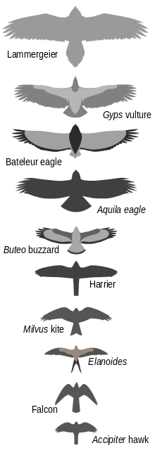
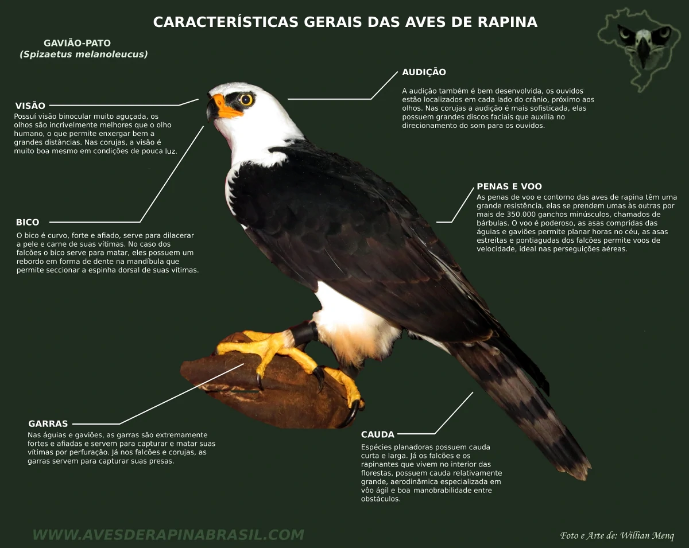
características - Aves de rapina têm algumas características físicas bastante específicas: bicos afiados em forma de gancho, garras fortes e visão e audição bastante aguçadas. Algumas espécies são diurnas (caçam durante o dia), como as águias. Outras são noturnas, como as corujas.

 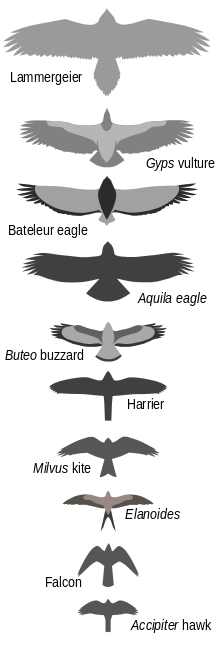
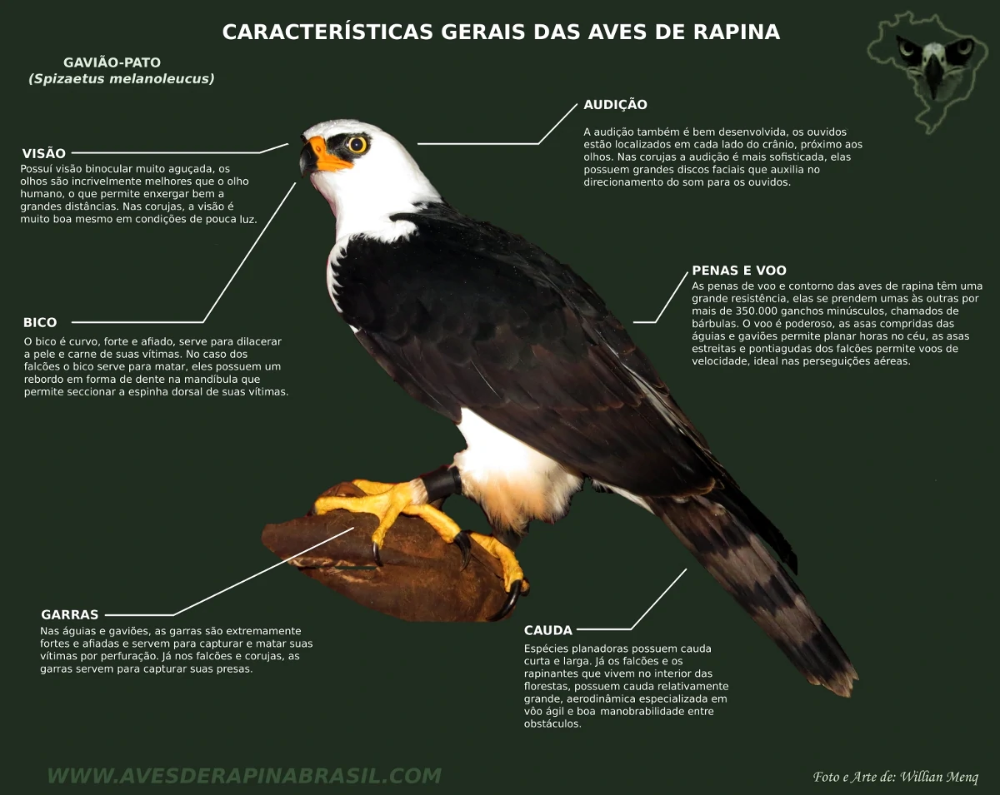
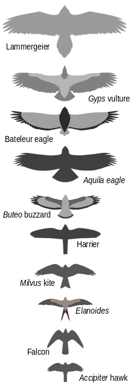
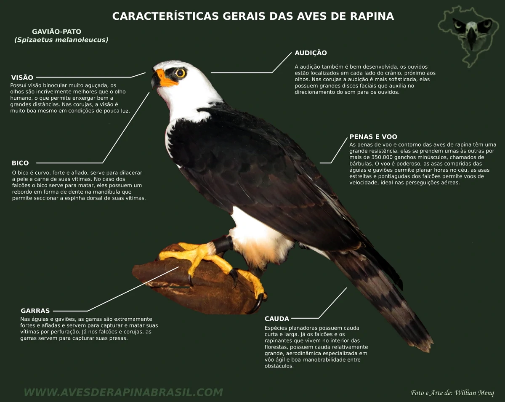